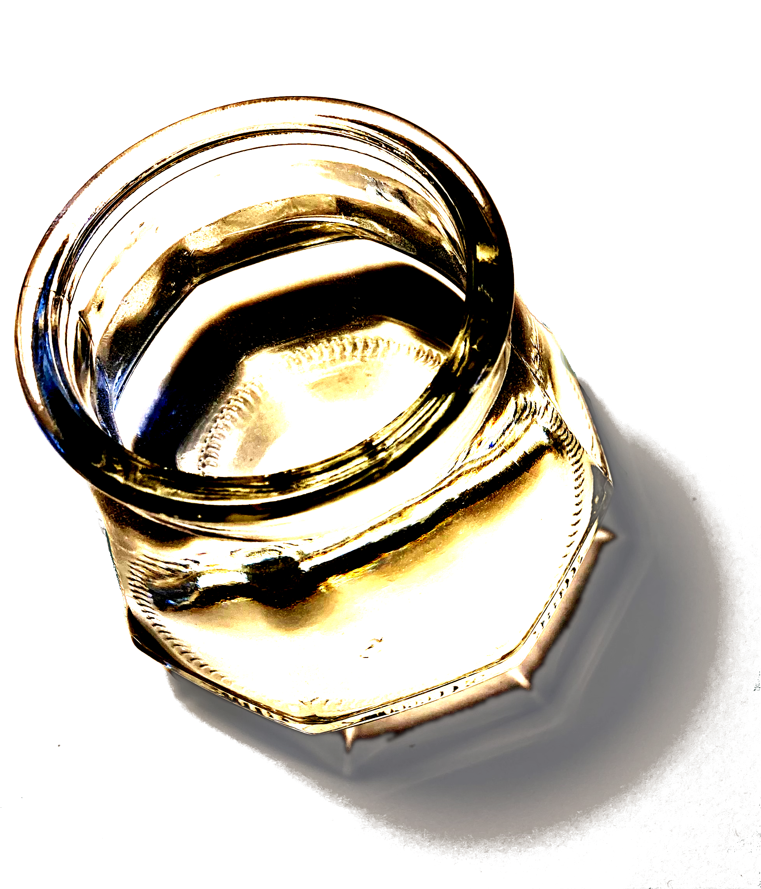
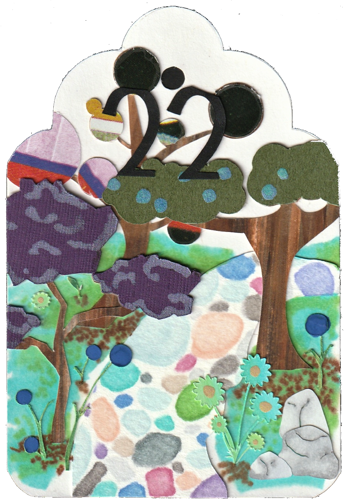
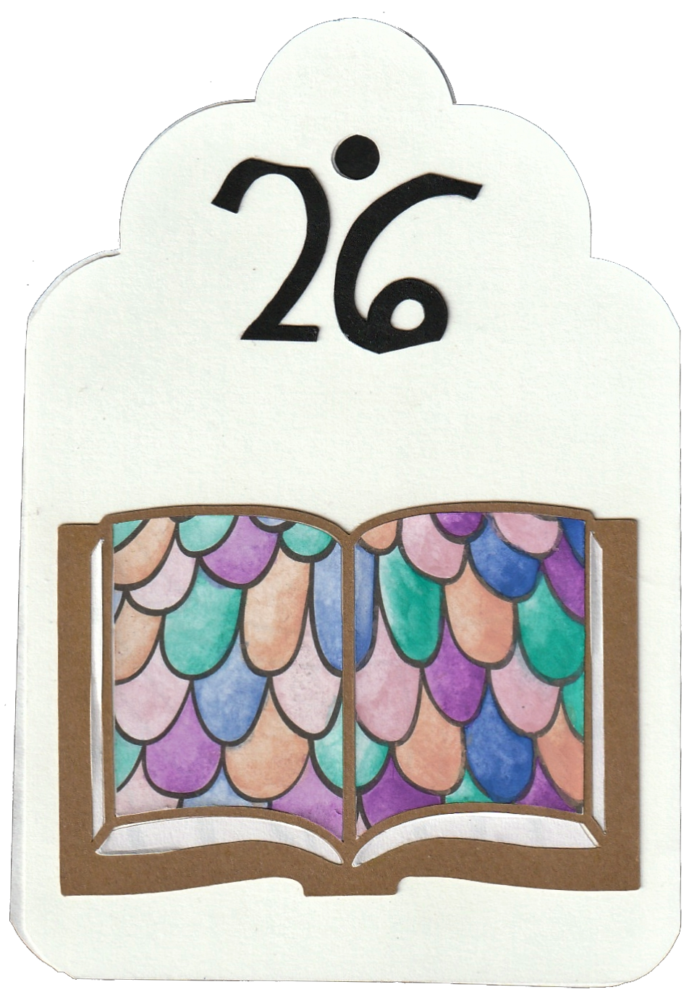
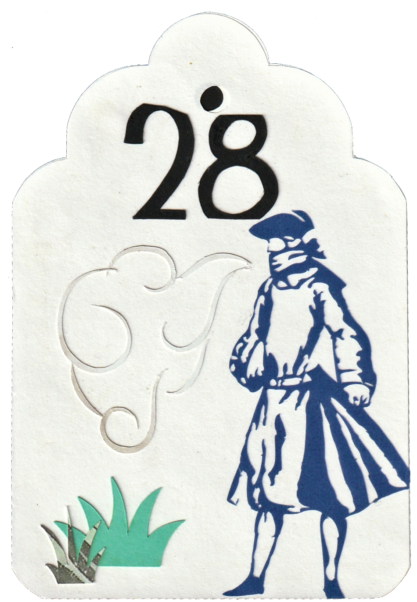

card meanings
1 rider: news, movement, passion and energy
2 clover: luck, opportunity; passage of time
3 ship: departure, distance, voyage, journey
4 house: home, safety, tradition, privacy
5 tree: growth; legacy or generations; growth; vitality and health
6 clouds: uncertainty, unclarity, or misunderstanding; foreboding or troubled feelings; distraction
7 snake: desire, seduction, attraction, sexuality; wisdom or forbidden knowledge; medical matters
8 coffin: death, ending, grief, loss; burial of a feeling or truth
9 bouquet: flattery, social life; ettiquette
10 scythe: accidents or danger; a warning; a reckoning
11 whip: conflict, argument, discussion, or debate; punishment or scolding; ojection
12 bird: anxiety, restlessness, or nerves; socialization, gossip
13 child: children; innocence, immaturity, or inexperience; play; new beginnings
14 fox: cleverness, cunning, trickery; caution or suspicion; selfishness
15 bear: power, leadership, or influence; dominance; strength of character; short temper
16 stars: hope, inspiration, optimism; dreams; spirituality; progess with regard to goals
17 stork: change, transition, movement; recurrence or a new cycle; babies; yearning
18 dog: loyalty, obedience, devotion, support; friendship; a follower
19 tower: isolation or solitude; arrogance or ego; aloofness
20 garden: society, culture; public affairs; teamwork or frame
21 mountain: difficulties or struggles; problems; a challenge; impairment
22 crodssroads: a choice, paths in life; a separation; hesitation; many opportunities
23 mice: defect, flaw, or disease; destruction or depletion; kindess and resilience
24 heart: love, passion, relationships of any kind; amicability; forgiveness; softness
25 ring: commitment or promise, partnership; cycles
26 book: secret; the unknown; entertainment; knowledge or skill
27 letter: message in any form, sympathy; need
28 gentleman: a male person in one's life; masculinity
29 lady: a female person in one's life; femininity
30 lilies: harmony; intimacy and sexuality; true beauty; morality or virtue
31: sun: warmth, energy, creativity; life force; light
32 moon: the subconscious; intuituion; emotion; fears; desires; fantasy
33 key: access or a barrier; solution; fulfillment
34 fish: money matters or wealth; business; abundance or many gains; the unknown
35 anchor: stability; durability; restaint; security; staying "grounded"
36 cross: conviction; duty; fate; burden; purpose or life mission; being at a crossroads; indoctrination